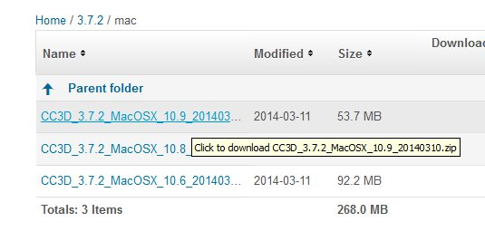
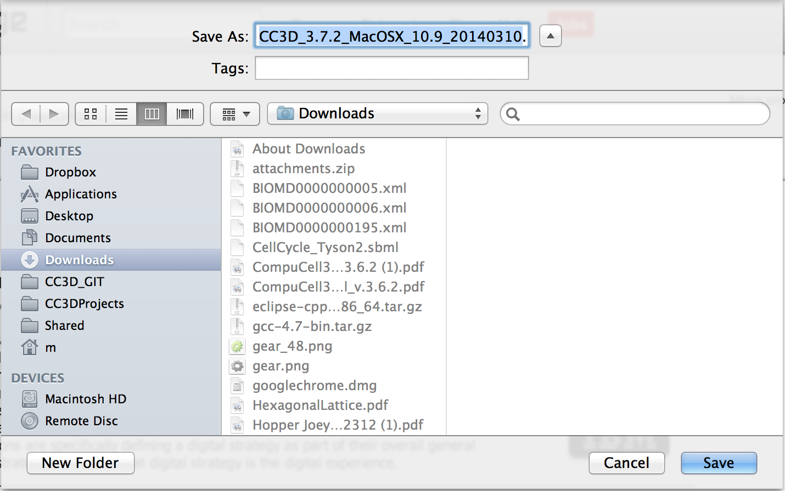
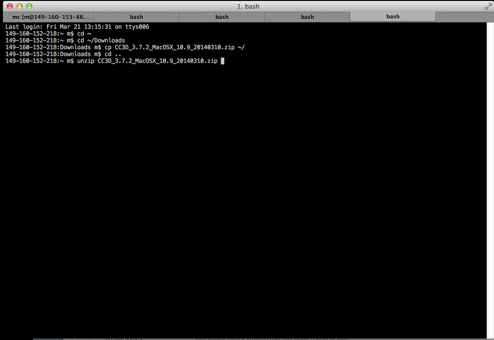

To install CC3D on OSX you first need to make sure that you download CC3D binary package that is appropriate for your OSX version. We follow fairly simple naming convention for binary packages:
To install CC3D on OSX 10.9 please use tha package which has
MacOSX_10.9
in its name. For example for CC3D 3.7.2 the package can be called:
CC3D_3.7.2_MacOSX_10.9_20140310.zip
Remark: Bionet-Solver does not work on OSX 10.9. We strongly recommend that you consider using SBML-Solver which is much better and way easier to use SBML tool for CC3D simulations than Bionet-Solver. To get started with SBML-Solver please see Python Scripting Manual for CompuCell3D 3.7.2
To install CC3D on OSX 10.8 please use tha package which has
MacOSX_10.8
in its name. For example for CC3D 3.7.2 the package can be called:
CC3D_3.7.2_MacOSX_10.8_20140310.zip
To install CC3D on OSX 10.6 or 10.7 please use tha package which has
MacOSX_10.6
in its name. For example for CC3D 3.7.2 the package can be called:
CC3D_3.7.2_MacOSX_10.6_20140310.zip
Remark: The 10.6 binary os 64 bit binary so if you happen to have 32 bit processor you shuld think about upgrading to newer machine.
Please note that we do not support OSX previous to 10.6
Detailed Installation Guide for OSX
- Obtain binary file appropriate for your OSX distribution (see explanation above) . In my case I am using OSX 10.9 hence I am downloading CC3D_3.7.2_MacOSX_10.9_20140310.zip

- Save file in the Downloads directory

- open up terminal and cd to Downloads directory by typing
cd ~/Downloads
- copy CC3D package to your home directory
cp CC3D_3.7.2_MacOSX_10.9_20140310.zip ~/
Please note that you need to replace CC3D_3.7.2_MacOSX_10.9_20140310.zip with the name of the package you downloaded
- go to home directory by typing
cd ~
or
cd ..
- unzip the package
unzip CC3D_3.7.2_MacOSX_10.9_20140310.zip

- finally after the unzipping is done, cd to the directory with new CC3D install
cd CC3d_3.7.2
- run CompuCell3D
./compucell3d.command
- to test CC3D run Demos/SBMLSolverExamples/SBMLSolverOscillatorDemo/SBMLSolverOscillatorDemo.cc3d . The screenshot should look similar to the picture below:
 ""
""